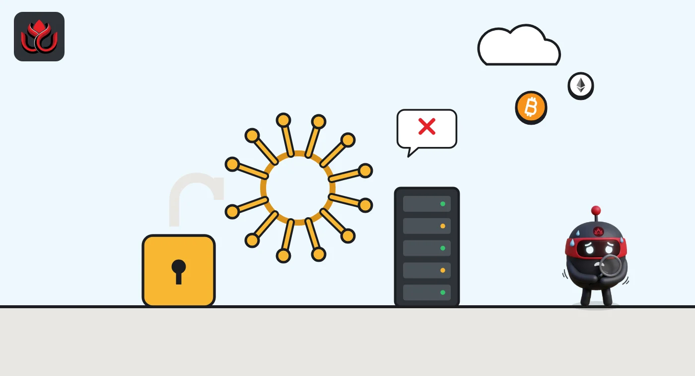

Chainalysis now says login tokens for every user were exposed. All must reset passwords
The crypto tracing firm first said only names and emails were reached. Its latest update says live tokens for every user and password hashes were exposed, and its Reactor and Data Solutions products are still offline.
Key points
- Chainalysis said on November 4, 2026, that live tokens for all its users were exposed to a malicious actor, along with names, usernames and password hashes.
- Its Reactor investigations tool and Data Solutions stayed offline. KYT, its address screening products and the login page were also taken offline on November 4.
- Every user must reset passwords and rotate API keys. Chainalysis says it has no evidence that investigations data was accessed.
What Chainalysis says happened
Chainalysis is one of the best-known blockchain analysis firms. Exchanges, banks and police use its tools to trace stolen crypto and screen wallets. Now the company is dealing with a breach of its own, described on its security incident page.
In its October 30, 2026, section, which quotes a customer email, Chainalysis said an outside actor used "offensive agentic techniques" to get into its systems and internal tools. Agentic means software agents, often AI-driven, that act on their own. At that point the company said only non-sensitive data was reached: user IDs, full names, email addresses and role labels. It said the incident was not related to the Binance theft.
The picture got worse in the following days.
Timeline
Chainalysis discloses that an external actor reached its systems. It reports no evidence of access to investigation content, credentials or session tokens.
Reactor and Data Solutions are taken offline as a precaution. Outside cybersecurity experts are brought in. Compliance monitoring products keep running.
Chainalysis confirms that some customer passwords were exposed through an on-path attack. Affected accounts are locked and must reset passwords.
After abnormal activity, KYT (web app and API), other address screening products and the login page go offline. Reactor, Data Solutions and Chain (Beta) stay offline.
Chainalysis says live tokens for all users, plus names, usernames and password hashes, were exposed. All users must reset passwords and rotate API keys.

What was exposed, and what was not
The latest update, posted at 11:00 p.m. ET on November 4, says the company found on Monday, November 2, that live tokens for all Chainalysis users were exposed. A live token is a login credential that can let someone act as a signed-in user without a password. Names, usernames and password hashes (scrambled copies of passwords) were also exposed.
Earlier the same day it confirmed an on-path attack, where an attacker sits between a user and a service, had exposed some customer passwords. It said that route was contained.
Chainalysis says it has no evidence that investigations data was accessed and no evidence that its attribution data, the labels that tie wallets to owners, was changed. It is telling customers directly if their KYT accounts appear to have been used without permission. It has not said how many KYT accounts were used without permission.
What customers need to do
Chainalysis says every user must reset passwords and rotate API keys. It planned to start restoring KYT and Address Screening on November 5, with customers able to send trusted IP addresses to support so they can be allowlisted. Reactor and Data Solutions come back after that, with extra account protections, and no date is given.
The company also tells users to reset passwords only through its official login page, not through links in emails, and to change passwords on any other service where they reused the same one. As of 7:00 a.m. ET on November 6, the page showed the November 4 update as its latest.
LC Insight analysis
This section is our reading of the facts above, not a statement of fact.
- We think the change in tone is the real story. The first post said there was no evidence of access to credentials or session tokens; five days later the company says tokens for all users were exposed.
- The risk is wider than one company. KYT screens deposits for exchanges and other businesses, so an outage or misuse there can slow compliance checks across the industry.
- Chainalysis says investigations data shows no sign of access. If that holds, the damage stays on accounts and logins rather than the sensitive case files police and exchanges rely on.
What's next
- When Reactor and Data Solutions come back online
- Whether Chainalysis says how many accounts were misused
- Any finding on who was behind the intrusion
Disclaimer. This article is based on public information and the sources listed below as of the update time shown. It is for information only and is not investment, legal or tax advice. Figures may change as companies and authorities publish new data.